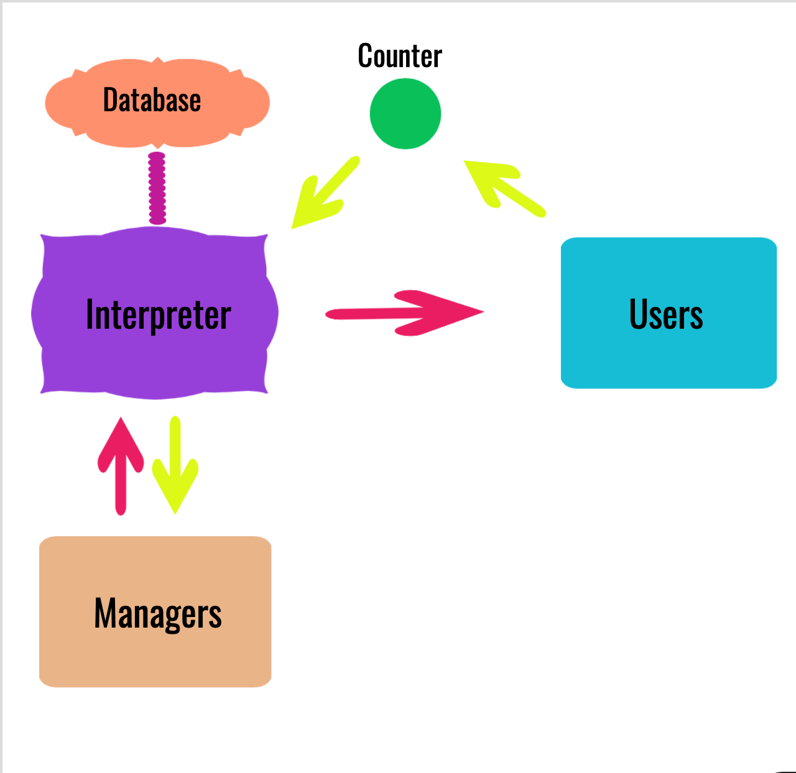
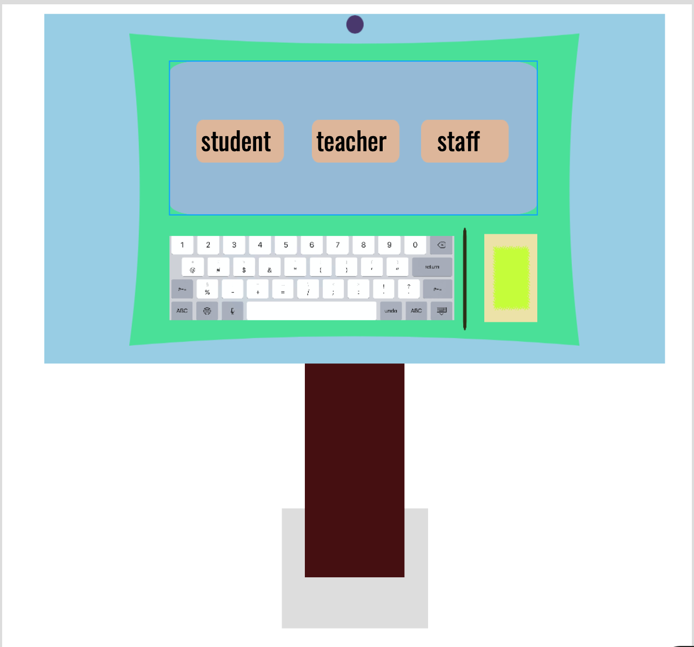
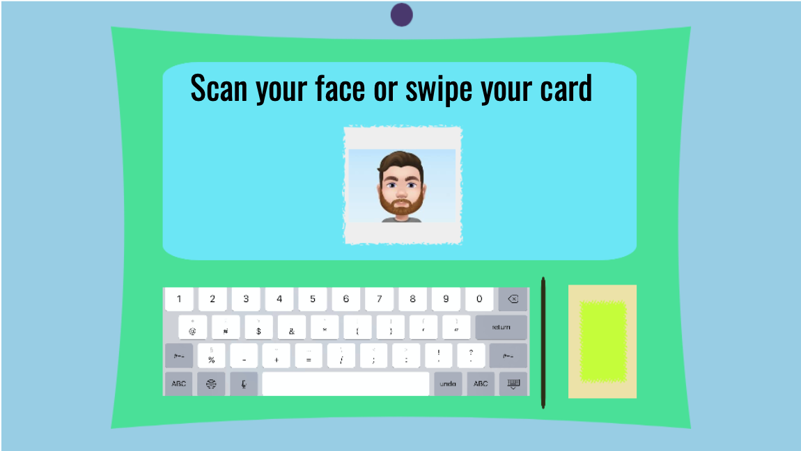
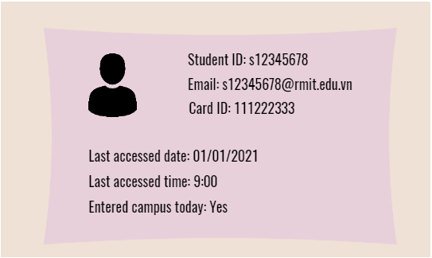
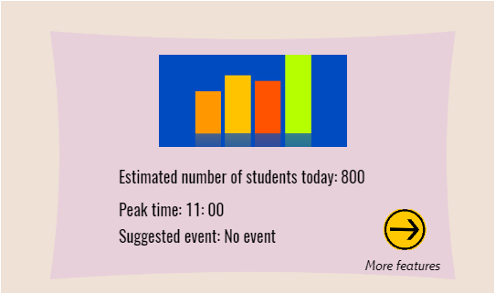
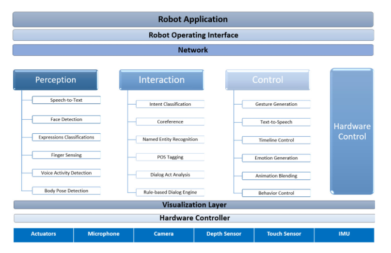
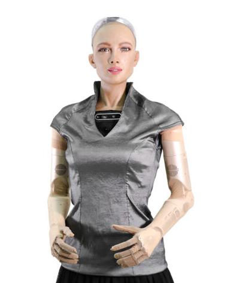

Git Tutorial Course
You can learn how to use Git and GitHub in a very short time
You can learn how to use Git and GitHub in a very short time


Regarding the team profile, we have already formed our group and team members.
Duy: His MIBR test result is protagonist and his ideal job is AI engineering. His typical personalities are diligent, innovated and a perfectionist. Most people have very close relationships with Duy because he is very friendly and willing to assist his teammates without hesitation. His knowledge about programming is also very broad and in the near future project, Duy is comfortable to be the main programmer as well as a leader to deliver tasks to his team.
Tuan: His MIBR test result is protagonist and his ideal job is App/Web Developer. In our group, Tuan is the most determined person, who always willing to contribute his idea and support his friends. He is really desire when building the application, especially the website, and I believe this also has a correlation with his ideal job – App/Web developer. In the upcoming project, I believe Tuan can be a main supporter, organizing and planning for building the application.
Suk: His MIBR test result is Mediator and his ideal job is Software Developer. Suk was fortunately study in the US for 5 years before coming back to Vietnam, so he is very confident when communicate with different people. He is an open person and always ask questions in order to solve a ‘puzzle’ in different approaches. He is a mediator, which said that although on the outside they may seem to be shy or quiet, but in fact, they are very energetic inside. Suk also has the ability to work under pressure very well, which is a very crucial skill in this project. For the future project, Suk is suitable in the content writer or the designer for the application because he has very good concept about designing and visualizing images.
Thuan: His MIBR test result is logician and his ideal job is AI developer. Thuan is a type of person who is very creative and usually think a lot, as same as his personality type: his ideas are very logical, and he always plan in order to create a backup plan if anything goes wrong. Thuan also has a very great researching skill and good time management, which helps him be able to control the pace of the work. Personally, his role in the future project can potentially be a researcher and the sub-content writer because of his wide knowledge about many areas.
The link to my website:
https://ajking02008.github.io/IT_World.github.io/
The link to my github repository:
https://github.com/ajking02008/The_IT_World.github.io
My comments about the audit trail on the GitHub repository:
On day December 13th, I have pushed a lot of codes to GitHub because it was the time that the tutorial courses page are done and need a lot of commits to GitHub. Until now, after 7 days, only Wednesday (December 16th) and Sunday (December 20th) are the days that I push my code to the GitHub repo because that is the time I finished creating and decorating my website. I made very few commits to my GitHub repo, because I only push codes after finish customizing my website on the local machine, not frequently pushing codes, since there might be some potential error that I could not fixed it. In addition, from my point of view, committing codes frequently can be a little time-consuming.
Overview:
My project idea is to build a system that can help the school manage the amount of RMIT students, teachers and staffs attending the campus on that day, which some advanced features such as counting, face recognition, identify different cards, and especially predicting the difference in the amount of people on the campus that day to carry out difference tasks which I will discussed further below. In general, it will be an intelligent machine that includes a scanner to capture image, an interpreter that can analyze the data and an output screen, which can also be included inside a web + mobile data application.
Motivation:
The motivation behind this idea is that on a daily basis, when we come to school, student cards are always checked by the security guard, which might be a little time-consuming and inconvenient for students that drives to school, before they can park their vehicles, checking cards could consume quite much time. Moreover, during these days, masks are necessary to wear in the school, it is challenging to identify the correct student face: they could bring their friend’s card and come to school. Furthermore, another problem is the students might accidently forget or lose their ID card, the school policy is we must pay for the fee and wait for 2 to 3 days to get another card. Therefore, what if using the scanner to capture the students face can possibly address this problem? For the most crucial point, for some special occasions such as during the Covid-19, there are some students who are not allowed to be on the campus but self-isolated at home, and whenever checking the ID cards, the security guards have to check another long list to make sure that which students have permission to come here. Based on the above issue, this drives me to an idea for constructing a technological machine that can tackle the problem
Description:
The machine will consist of four parts: a scanner, an interpreter, an output screen and a storage (depends). There will be 2 interfaces: users and managers.

How the system works
The scanner will have the ability to identify and distinguish different card ID by using face recognition and RFID tag inside the cards to recognize the difference. How this feature can be applied easily is for the first time, the students data will be input, including the basic information such as student ID, name, date of birth, … from the school manager and then the scanner will capture the image with the RFID tag in the ID card. The data will be transfer to a database and consequently, the next time the student wants to access the machine, it can recognize the student either by using face recognition or using the RFID tag in the middle of the card and compare it with the initial data in the database.

The user interface

User scanning their card or face
Successfully scanned and approved to enter the campus
Unapproved to enter the campus
For the interpreter, after input data, another feature will be enabled which is the ability to count the number of students, teachers and staffs attend on the campus that day. The method using for this feature will require assistance from the scanner and the output screen, every time the card ID is scanned, after the machine has identify that person is an employee, a teacher or a student, the counting for each type will increased by 1. To make it more precise, in case if the student come out and then return to the campus later, on the output screen, there will be a notice message to ask if the students have entered the campus already or not.

Manager look at student info

Predictions from the interpreter
For an addition feature that can be appended to the system, when we are driving to school, there is also an option appeared on the output screen that ask the person if they are driving or not, if that person choose yes, the data will be transferred to the database and the fee’s notice message (which is 4,000 VND for the parking area) will be saved later on when that person come out from the parking place.
Another advanced feature that the interpreter can do is after analyzing the data for the first 2 weeks of the semester, it can potentially predict the amount of people that can appeared on the campus for each day, at some particular time, for example: 9 am – 12 pm on Monday may have a different result with 9 am – 12 pm on Wednesday by using machine learning technology. To discussed in more details, every day, the machine will learn about the patterns base on the amount of data that is input to it, then it will generate an algorithm to calculate and make prediction on the following week, estimating how many students, teachers and staffs are coming to school. It may be normal to have these feature, however, from my point of view, having prediction from this machine can assist on many particular activities, such as event organizers can use the above information to choose an appropriate day or the canteens may need more employees to work during crowded day.
Furthermore, in some special case, as discussed above, because of the covid-19 scenario, some students are not allowed to come to school. Therefore, we can input some special information to the machine that won’t allow some specific people to come to school on a period of days.
Tools and Technologies:
There will be a lot of tools and technologies use in this technological device. The first technologies will require a back-end system consist of a database to store data about students, teachers, and staffs.
This database can be constructed using SQL commands. For the scanner, it will be computer vision to assist in catching the image of face recognition and the RFID in the card.
For programming the scanner, there are several ways which I considered to written on. There are Python, Java and C. For python, it is very convenient as the syntax is easy to learn, and the IDE using in this project can be Visual Studio Code or PyCharm which has many friendly features. There are open-source tools for instance Google vision API or OpenCV. For the library OpenCV, it is written on C so using this programming language could also reduce the time for building the software. For python libraries, the link to download the scanner module is here: Finally, for the advanced feature to work, machine learning will play a pivotal part. Using Microsoft Azure can assist on building a simple machine learning software for this machine. For building the application that can be use with this system, Apex-Oracle or Streamlit can be considered to significantly create an app-version that can directly connected to the database and having the features.
Skill requires:
The most crucial skill that will be required for this project is advanced knowledge about programming languages, especially in Python and SQL commands. For further explanation, there will be a lot of coding when building the scanner, the database and the application to use with the machine. Furthermore, understanding the concept and the features of this intelligent machine is also of paramount importance, because in order for the system to function, the developers need to know which data will be input and also the accurate result which is output from the application. The programmer of this project should also need critical thinking skill, logically build the machine learning’s feature in this system and could identify the risk when setting up this technological device.
Overview:
For the outcome, if the technological device is successfully built, it will assist the school as well as the students to attend the school more convenient. The security guard might be redundant from the job due to the help of this machine, however, as far as the system is concern, the device should be observed carefully if it makes any mistake, so possibly redundancy is rarely happened. The scanner might be expensive and time-consuming to build, so it might only place on the entrance to the school, so the feature that can count how many students attend the class might not be considered. Consequently, the invention of this technologies could assist the school on making important decisions in the future as previously discussed.
Regarding to their comments, I wholeheartly respect their help in observing and providing feedbacks. For in-depth discussion, the points will be analyzed and evaluated as far as possible:
To start with the first point, about choosing the appropriate biometric identification, I chose face recognition combine with scanning card ID because the user’s face is printed on the card, so the machine’s database already has the data to compare. Using other technologies such as iris scanner or fingerprint might be faster and more unique, convenient, however, I want to limit the spaces for storing data, because the device is not only scanning but also interpreting data and make predictions, so after analyzing the usage for the spare storage, I decided face recognition would be enough for more than 3000 people at RMIT.
The second point is about enhancing the quality of the machine for long-term, which included privacy, maintenance of the system and the backup plan. Because the system is only the idea, therefore, the privacy issue has not been totally addressed. However, there are protection ways that can prevent unauthorized users. For instance, there will be a security guard standing near the system to make sure that no student is accessing the school without permission from the machine. About the maintenance, for each quartile (3 months), the database will be updated to the newest information. For the backup plan, just in case if there is any user that have problem with the face recognition or the scanner is broken, the security guard will visually check the card and then a new face ID data can be recorded to the machine later.
Lastly, about other features of the application, a history panel will be added to the application so that the manager can view who have accessed into the system at which time according to what Nhật and Tuấn has mentioned earlier. The last point, which is about materials making this technological application, currently, I am concentrating on developing the application so for the making of the hardware, it will be addressed after finishing the application.
There are various advanced technologies in IT industry, one of the major fields that I am going to discussed in this essay is about AI (which stands for Artificial Intelligence) and Machine learning.
In order to have a clear view about them, AI can be define as “a technology which enables a machine to simulate human behavior” [2], which can be understand as ‘human’ to ‘machine’ interaction, when they are becoming intelligent and can observe, analyze data and make precise decision. In contrast, Machine learning is actually a sub-field of AI, in terms of self-learning and self-improvement, it will create the algorithms inside the machine itself and gradually enhance it to a better version: “Machine learning is a subset of AI which allows a machine to automatically learn from past data without programming explicitly.” [2]
The state of the art mentioned in this passage that can reflects the most advanced of AI and Machine learning is the implementing of these technologies in the FER (Facial Expression Recognition) system. All details, descriptions and figures in this essay will be referenced from K. Patel in IEEE Access [3]. According to K.Patel, this system is used to analyze and interpret different facial expression of many people based on different approaches such as “face detection, feature extraction, and emotion classification”.
According to the author of this website, the system will work by using a recognition method to check which “state” of emotion that the person currently have, with the use of facial recognition to be the core technology of this state of the art. The final emotions are interpret based on “the six most generic emotions of a human are anger, happiness, sadness, disgust, fear, surprise” [3], and also the algorithms with advanced concepts and calculations which are included in Figure 9 above such as Vector Machine or Neural Network.
The user can also research data using a “search string” about emotions and this system will provide high-level feedback about emotions, and the results are given by the figure. In the future, the author also mentioned about researching difficulties in identifying emotions, and some potential analysis approaches that can further enhance the performance of the FER.
This system will apply a lot of different technologies, with the core ones are AI and Machine learning, the potential ones that also needed to be developed include computer vision, deep learning and database concepts. Computer vision are undenied because it is necessary to capture facial expression of human. For deep learning, it is because emotions of human are not as simple as it is stated, the way emotions get expressed out are unlimited, that is why the system have to continually improve itself everyday in order to be smarter and understand the emotions better.
The way that the system work can be described as the figure above. The user will get a scanner to gather data about the emotions, based on the 3 approaches displayed: Face detection, dimension reduction and then normalization, with the help of the datasets which are settled up by professionals, in order to follow through the next step: feature extraction, to identify unique point about the input data, then finally produce the result which is the emotion.
In reality, AI and Machine Learning can be exponentially developed if there are proper vision and efforts contributed to these advanced technologies. From my perspective, AI and Machine learning have many applications in our daily life.
As far as the history of AI is concern [4], human has been able to develop such wonderful machines like the first autonomous driving car from Google, the virtual assistances such as Siri from Apple or Cortana in Windows, and then the Alpha Go machine that beats the world champion at that time. In the near future, maybe 3 years from now, many scientists are trying to implement AI and machine learning into huge industry such as hospitality, where health and mental issues are the most vital concern in the world. For instance, when Covid-19 is taking place, AI and Machine learning are getting implemented to create vaccines for people. As far as AI are concerned, other technologies will be needed to be develop or associated with AI, for example machine learning, deep learning, autonomous technologies and privacy is compulsory to protect AI being attacked from malicious sources.
Regarding about the impact to this kind of technologies, I believe introducing AI is a magnificent breakthrough to the history of technologies and the human world. Many works that can potentially be overload or extremely risky for human, such as analyzing data to create vaccines, or businesses that requires heavy tasks in their chain of production. Those specific area are truly difficult, even impossible if there is no proper plan. When human is limited by their strength and can be overload when working overtime too much, these jobs could be address by using AI and Machine learning. The operation of AI and machines during our daily life will totally change the pace and the way it usually flows. According to Bernard Marr from bernardmarr.com website [5], when AI takes up the difficult works, it opens opportunities for human workforce to choose a different task that is more entertaining and involves creativity. For instance, we will have more time to discussed about the ideas, while AI and machine learning handles the interpreting part. Mostly, the thing that AI will change the way people work is the amount of time they spent on which specific tasks Therefore, this could increase happiness among the employees and improve productivity. Businesses are the stakeholders that are most beneficial from AI because increasing productivities could potentially increase their profit. Moreover, not just only business but also hospitals that are trying to implement AI into their health system, with machine learning help, data would be carefully analyzed to get the appropriate medicines for patients. Lastly, for daily life, virtual assistances such as Siri, Alexa can help people do some tasks on their devices without touching it which is very convenient. Later on, machines will get smarter and eventually performs many tasks that human cannot do. However, any powerful technology also has drawbacks with it. In this case, job redundancies may occur because implementing AI also means it will cover most of a normal employee tasks, so only a very limited number of employees that have IT skill can manage to use AI. Furthermore, the intelligence of AI are significantly enhanced day by day, so scientists fear that one day, AI can actually overwhelm human.
After discussing about the aforementioned benefits and drawbacks of implementing AI & Machine learning in our daily life, I personally believe it will affect most of my career in the future. My ideal job, which is AI engineer, also has connection with AI and Machine learning, because I will need a lot of research about this field. For instance, AI will create a great impact in my education, if I have an AI system to record my score and then recommended which skill that I need to improve in order to get a better grade, or even something like cooking recipes and a meal planning for my family based on the expert system. Sometimes you have to analyze and make decision by yourself, based on your experience only and this could create mistakes. However, with the help of AI and machine learning, I can eventually spend my time studying easily when there is an application that understand my work so well like AI. The influence that AI make to my living would not be too surprised to me, in my opinion, because I love technologies and any new devices or application that can assist my work, including AI and machine learning, I will always give a try. For my family members and my friends, AI is not what they usually prefer because they are not into technologies. Although it is difficult for them to control AI devices, I believe with a proper instructions and usage time for about 1 to 2 months, everyone will get used to it.
The next topic about IT Technologies that I am going to describe about is robots. Usually, people believe that robots are only products, not considered to be a technology. However, robots are actually the technologies which is also a combination of other technologies. This section will explain further about robots and its impact to our society.
The state of the art that will be mentioned in this passage about robots will be the breakthrough in the history of robots: Sophia, a robot which is considered to be “a living creature". “She is considered to be a Saudi Arabian citizen, the first robot to receive citizenship of any country.” [7] In November 2017, “Sophia was named the United Nations Development Programme's first ever Innovation Champion, and is the first non-human to be given any United Nation title.” [7] She has an appearance with face, hands and interactions exactly like a human. Sophia can communicate with many people, even with her creator, in a very confident way.
To help you understand how this state of the art work, it is using the interface below:
 Handson AI SDK Adopted from https://www.hansonrobotics.com/sophia-2020/Basically, Sophia is a robot that has a lot of different technologies inside her brain, which include AI, machine learning, deep learning… She is a special robot that have the intelligence to talk to human with different area of expertise because she is connected with a virtual database which allows her to access a lot of online sources to gather data and information. Not stopping at that point, Sophia has the ability to learn new things and then interpret them and make predictions, talking to IT expertise about their jobs and their works. Although she can perform such amazing tasks, her structure is still a robot, we can observe from the outside there are a lot of wires and mainboard inside her body, which means she is still imperfect, but as far as the technologies grow in the future, there will be a potential growth for Sophia to enhance her own interface and knowledge in order to become even smarter.
 Sophia robot version 2 Adobted from https://www.hansonrobotics.com/sophia-2020Currently, there are Sophia version 2017 and Sophia version 2020 is also available. In an obvious way to say, there are many failed prototypes before these two robots, and the newest version of Sophia are much faster, learn quicker, more precise than any other robots that have been invented until today. According to hansonrobotics.com [8], the creators have managed to create a ‘full body’ for Sophia, dressed her carefully so Sophia is more similar to a human. She can move around and make 74 degrees of freedom motions, which means she can control her hands and her legs to make movements. She also has more expression to describe a human facial emotion better, as well as her speech voice is also clearer and used cloud computing to store and interpreting data.
As far as robots are concerned, we can continue to develop and enhance more robots like Sophia at the moment to introduce robots to the human living environment. For this industry to grow, there are many robots that have been implemented to our daily life, such as the cleaning robot or the autonomous robot used in the hotel to carry food in Japan when Covid-19 is happening. In the future, it can be possible for creators to develop even more advanced robots such as drones that can be use in the militaries or reception robot as an example. For health care, it is very risky to say but there might be a potential way to create a surgery robot that can help doctors in the future. In order to create better version robots, other advanced technologies such as AI, machine learning, deep learning, computer vision, cloud computing … are very significant and have to be developed consistently with robots in order to make it more intelligent.
It is true that robots can play a pivotal role to our living standards, now and even in the future with advanced technologies and features for people to use. Robots are invented to help employees perform extremely dangerous and difficult task in a very long time without being exhausted. For instance, robot has the ability to work consistently 24/24 hours, they can dive into the water without the need of oxygen, they can carry heavy stuffs and also do the works without any inaccuracy. Not just only in working place, at home, robots can help the family members have more time to spend together when housework such as cooking, or cleaning can be done by autonomous machines using robots. From my point of view, using robots will eventually create a huge change to people life, when the simple tasks can be done, people will have more time to spend on other tasks and improve the quality of their living, with better work-life balance because they can leave their work to robots and enjoy their time with family and friends. Many businesses that use robots for their services not just only improve efficiency, it creates an interest experience to the customer and they feel really excited about robots. Every person that knows how to use the robots will mostly be depend on it because of how useful and convenient it is. The drawbacks that result from implementing robot could be the redundancies of many employees. Imagine if a mass production factories implement robots, it is convinced that not the same quantity of employees are needed, only some IT people are enough to manage the robots work. Moreover, if the robots break down, it will require a large amount of finance and time for maintenance of them.
From what I have discussed about robot, I believe in the future, approximately about 10 years later, robots will be an indispensable device in my home. Personally, I love technologies, and I am really a ‘new-tech’ person, which means that any innovate technological devices including robots, it would be a great pleasure for me to take a try at it. At the moment, my parents are using a cleaning robot (Liectroux) in our house, which is very convenient, save time and consume less energy for housework. At some point, the only thing that I concern about is the intelligent of the robot, a typical example is my cleaning robot, it could not recognizes which place has been cleaned, it just going around the room until I shut it off. But as far as the impact is concern, I believe robot can create huge change to the way I am living. At some point, I wonder if there will be an assistance robot with me every morning to wake me up, remind me about the important meetings, my timetable and many more stuffs, I would be dependent with this robot. In a general way, you always have to remember something by making notes on your book, your phone or just memorize it. On the other hand, having robots will make things more convenient and save time, not just only me but also my family members. The only problem that my parents might face is that they are very lack at technologies, so adjusting the setting of the robot might be a real issue.